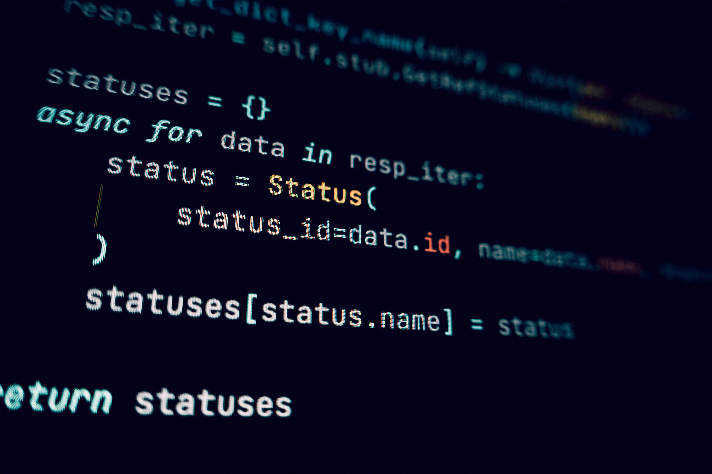
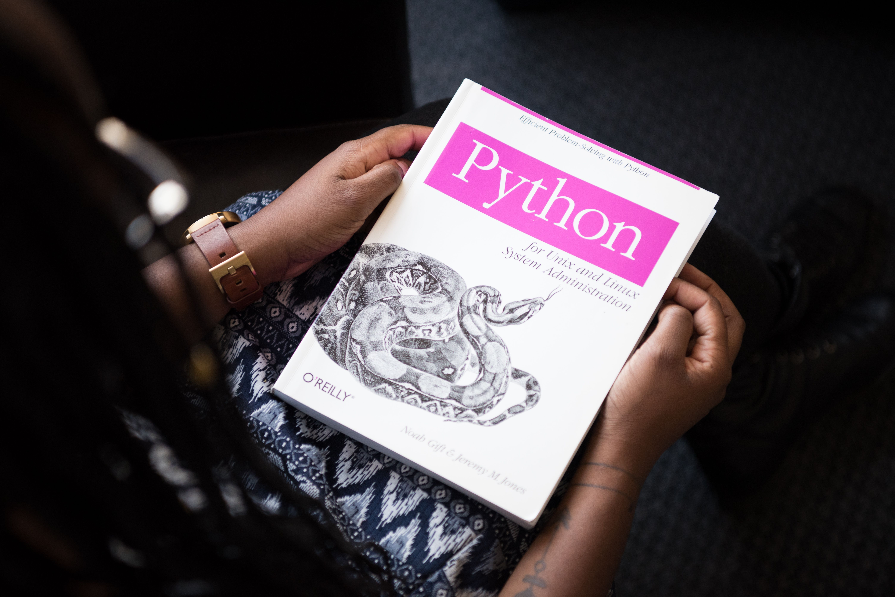
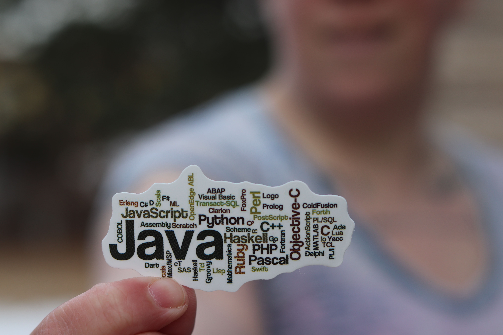
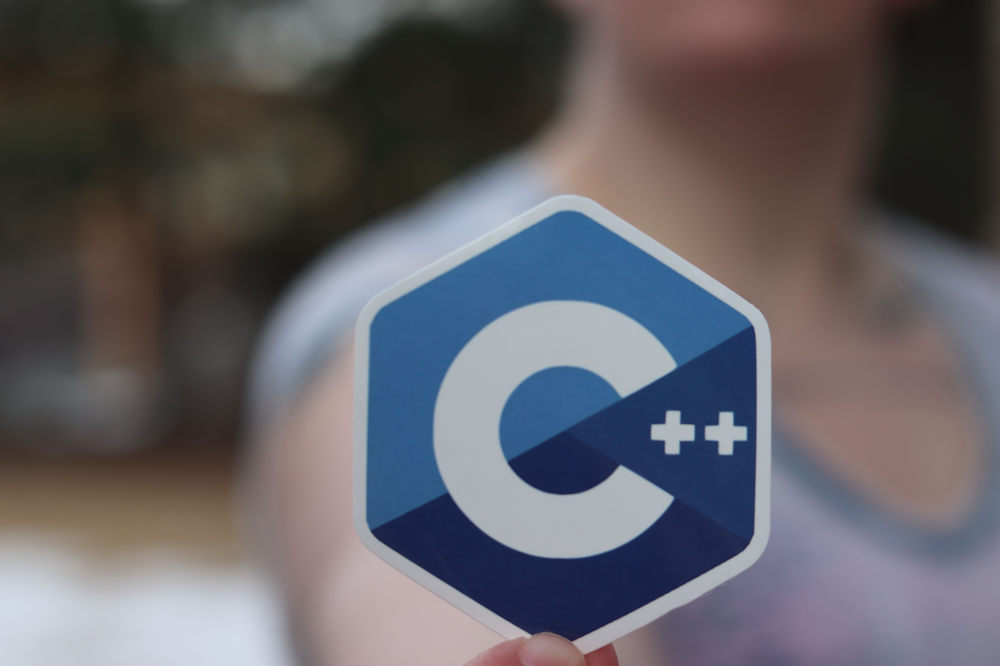

Existen varios lenguajes de programación que se usan en las aplicaciones web. Estos son cinco ejemplos. HTML y CSS son diferentes porque sirven para estructura y estilos.
JavaScript

Se utiliza en las páginas web para responder a lo que hace el usuario. Por ejemplo, cuando pulsamos un botón.
Se ejecuta en el navegador, aunque también se puede usar en un servidor.
Python

Es un lenguaje con instrucciones bastante fáciles de leer. Se usa mucho en automatización y con programas diferentes.
También sirve para crear partes de una aplicación web en un servidor.
Java

Es un lenguaje que usamos en DAW para aprender variables, condiciones y objetos.
Java y JavaScript son diferentes, no hay que confundirlos.
PHP
Con PHP podemos recibir información de formularios y trabajar con datos en un servidor.
En el tema 5 tenemos un archivo PHP muy sencillo para practicar.
C#

Es un lenguaje de Microsoft que funciona con la plataforma .NET. Se utiliza para crear aplicaciones.
Se puede usar en desarrollo web y también para otros tipos de programas.